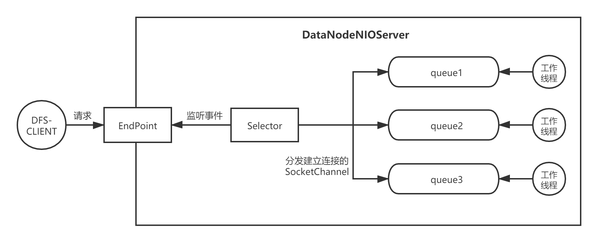

透彻理解分布式存储（十七）——高并发架构：Reactor模式
分布式系统的设计还有一块非常重要的考量点——高性能和高并发。高性能和高并发通常放在一起讲，高性能一般体现在系统内部的性能优化上，比如基于内存实现的数据存储，文件I/O，异步刷盘机制，锁争用，长短链接等等。
对于我们的分布式文件系统来说，高性能的瓶颈主要在于客户端与DataNode的连接方式——短连接，以及文件上传方式——逐一连接重复上传。我会在后面章节，针对性能问题对客户端的网络机制和文件上传机制进行优化。
本章，我们重点关注分布式文件系统的高并发架构。所谓高并发，就是说系统在单位时间内能够并发处理的DFS客户端请求应该尽量大，也就是QPS尽量大。分布式文件系统，并发瓶颈主要在于DataNode处理客户端的文件上传和下载请求，那么我们应该怎样优化来提升下载/上传的QPS呢？
本节涉及得代码存放在：https://gitee.com/ressmix/source-code/tree/master/5.dfs/5.concurrent。
一、Reactor架构
本章，我会采用Reactor架构对我们的DataNode NIO Server进行重构，以提升并发度。在讲解Reactor模式之前，先来回顾下目前的架构。
1.1 现有模式
我们的分布式文件系统的服务端，目前采用的是原生Java NIO来处理客户端的请求，服务端的整体架构如下图：

DataNode有一个NIO线程，负责监听客户端的连接请求，然后将成功建立连接的SocketChannel放入队列，由各个Woker线程进行处理，这是一种典型的两层模式。
这种模式有什么问题呢？很显然，Worker线程既要负责解析请求——底层的SocketChannel的字节读写，处理OP_READ和OP_WRITE事件，又需要完成系统自身的业务逻辑处理——文件磁盘I/O，效率非常低。
所以，一种常见的做法就是再增加一层，也就是分离请求解析线程和业务处理线程，最典型的就是Reactor模式。
1.2 Reactor模式
我在《透彻理解Kafka》专栏中详细讲解过Kafka通信模块的底层实现。Kafka采用了Ractor模式，并且底层完全基于Java NIO实现，经历了工业环境的无数考验，所以我们完全可以参考Kafka的设计来重构自己的通信模块：

我先根据上图，讲解下Kafka网络层处理请求的流程，便于大家有个印象，后续我就会仿照这个流程对我们的分布式文件系统的DataNode NIO Server进行重构：
- Acceptor线程启动后，基于Java NIO的Selector组件，监听客户端的Socket连接事件——
OP_ACCEPT； - 当客户端请求建立连接时，Acceptor会监听到该事件，完成连接的建立，并把建立好的连接——SocketChannel通过Round Robin轮询的方式分配给各个Processor线程；
- 每个Processor线程会处理接受到的SocketChannel，并监听它的
OP_READ事件； - 当某个SocketChannel发生
OP_READ事件时，Processor会通过底层的NIO组件读取请求字节，封装成Request对象，扔到一个名为RequestChannel的全局队列中； - KafkaRequestHandlerPool线程池中的RequestHandler线程，会不断从RequestChannel中获取Request请求，交给Kafka API层进行处理；
- Kafka API层获取消息进行业务处理，并将结果封装成Response对象，入队到RequestChannel内部的响应队列中，每个Processor线程对应一个响应队列，所以一个客户端的请求和响应都会由同一个Processor线程处理；
- Processor线程对响应队列中的Response对象进行处理，当它监听到
OP_WRITE写事件后，就会解析Reponse，利用底层NIO组件响应给客户端。
以上，就是Kafka通信组件的Reactor模式的实现，Kafka使用了很多Processor线程负责Channel的请求解析和响应，并将具体的业务逻辑处理交给RequestHandler线程处理，属于典型的三层模式。
二、代码实现
接下来，我来仿照Kafka的Reactor模式，实现DataNode侧的NIO Server。我定义如下组件：
- DataNodeNIOServer：相当于Kafka中的Acceptor线程，负责监听客户端的连接事件，并把建立完成连接的SocketChannel交给各个Processor线程；
- NioProcessor：相当于Kafka中的Processor线程，负责监听SocketChannel的
OP_READ/OP_WRITE事件，解析客户端请求交给业务线程处理，并从响应队列中获取业务线程处理完的结果，响应返回客户端； - IOThread：业务线程，负责处理Processor线程解析完的请求，执行业务逻辑，然后将响应扔到Processor线程对应的响应队列中；
- NetworkRequestQueue：全局请求队列，NioProcessor线程解析完请求后，会将请求封装成NetworkRequest对象，扔到该队列中，IOThread线程会从该队列中获取请求并处理；
- NetworkResponseQueues：响应队列，内部为每个Processor线程分配了一个队列，IOThread线程会将处理结果扔到该队列中；
- NetworkRequest：请求对象的抽象，负责从SocketChannel中读取完整请求的字节流；
- NetworkResponse：响应对象的抽象，负责向SocketChannel写入完整响应的字节流。
2.1 DataNodeNIOServer
我们先来看DataNodeNIOServer，它负责监听客户端的连接请求，并将建立好的连接交给Processor线程处理。
可以看到，DataNodeNIOServer在构造过程中会创建一系列的Processor线程和IO线程，并给每个Processor线程分配一个响应队列：
/**
* DataNode NIO Server
*
* @author Ressmix
*/
public class DataNodeNIOServer extends Thread {
public static final Integer PROCESSOR_NUM = 10;
public static final Integer IO_THREAD_NUM = 10;
private Selector selector;
private List<NioProcessor> processors = new ArrayList<>();
private NameNodeRpcClient rpcClient;
public DataNodeNIOServer(NameNodeRpcClient rpcClient) {
this.rpcClient = rpcClient;
init();
}
@Override
public void run() {
while (true) {
try {
// 阻塞等待
selector.select();
Iterator<SelectionKey> keysIterator = selector.selectedKeys().iterator();
while (keysIterator.hasNext()) {
SelectionKey key = (SelectionKey) keysIterator.next();
keysIterator.remove();
// 建立连接
if (key.isAcceptable()) {
ServerSocketChannel serverSocketChannel = (ServerSocketChannel) key.channel();
SocketChannel channel = serverSocketChannel.accept();
if (channel != null) {
// 将建立连接的SocketChannel交给Processor处理
channel.configureBlocking(false);
Integer processorIndex = new Random().nextInt(PROCESSOR_NUM);
NioProcessor processor = processors.get(processorIndex);
processor.addChannel(channel);
}
}
}
} catch (Throwable t) {
t.printStackTrace();
}
}
}
/*---------------------------------PRIVATE METHOD--------------------------------*/
private void init() {
ServerSocketChannel serverChannel = null;
try {
// 监听OP_ACCEPT事件
selector = Selector.open();
serverChannel = ServerSocketChannel.open();
serverChannel.configureBlocking(false);
serverChannel.socket().bind(new InetSocketAddress(NIO_PORT), 100);
serverChannel.register(selector, SelectionKey.OP_ACCEPT);
System.out.println("NIOServer已经启动，开始监听端口：" + NIO_PORT);
// 创建响应队列
NetworkResponseQueues responseQueues = NetworkResponseQueues.getInstance();
// 创建Processor线程，每个线程关联一个响应队列
for (int i = 0; i < PROCESSOR_NUM; i++) {
NioProcessor processor = new NioProcessor(i);
processors.add(processor);
processor.start();
// 每个Processor线程分配一个响应队列
responseQueues.assignQueue(i);
}
// 创建IO线程
for (int i = 0; i < IO_THREAD_NUM; i++) {
new IOThread(rpcClient).start();
}
} catch (IOException e) {
e.printStackTrace();
}
}
}
2.2 NioProcessor
NioProcessor负责监听已经建立连接的SocketChannel的OP_READ和OP_WRITE事件，它的整个处理流程遵循一定的模式：
- 从内存队列中移除一个已经建立连接的SocketChannel，将它注册到自己的Selector上，并监听
OP_READ事件； - 从自己的响应队列中移除一个响应，并在该响应相关的SocketChannel上监听
OP_WRITE事件； - 不断轮询Selector监听的发生事件的SocketChannel：
- 如果是
OP_READ事件，则创建一个NetworkRequest对象并将完整请求缓存其中，然后取消对该SocketChannel的OP_READ事件的关注，并交给IO线程处理； - 如果是
OP_WRITE事件，则向该SocketChannel写入完整响应，并让其取消对OP_WRITE事件的关注。
- 如果是
经过上面这样的处理模式，一定能保证对于同一个客户端的请求，肯定可以处理完一个完整请求/响应后，再进行下一个请求的处理，这是一种”无锁串行化”的设计思想，在NIO编程中很常见：
/**
* Processor线程
*
* @author Ressmix
*/
public class NioProcessor extends Thread {
// Processor唯一标识
private volatile Integer processorId;
// 等待注册连接的队列
private ConcurrentLinkedQueue<SocketChannel> channelQueue = new ConcurrentLinkedQueue<>();
// 多路复用监听时的最大阻塞时间
private static final Long POLL_BLOCK_MAX_TIME = 1000L;
// 每个Processor私有的Selector多路复用器
private Selector selector;
// 缓存未读完的请求，Key为客户端IP
private Map<String, NetworkRequest> cachedRequests = new HashMap<>();
// 缓存未发送完的响应，Key为客户端IP
private Map<String, NetworkResponse> cachedResponses = new HashMap<>();
// 当前Processor维护的所有SelectionKey，Key为客户端IP
private Map<String, SelectionKey> cachedKeys = new HashMap<>();
public NioProcessor(Integer processorId) {
super();
this.processorId = processorId;
try {
this.selector = Selector.open();
} catch (IOException e) {
e.printStackTrace();
}
}
public Integer getProcessorId() {
return this.processorId;
}
public void addChannel(SocketChannel channel) {
channelQueue.offer(channel);
// 唤醒Selector
// 因为Processor自身线程可能在阻塞等待，所以当有新连接添加队列时，需要由server线程唤起它
selector.wakeup();
}
@Override
public void run() {
while (true) {
try {
// 1.不断对已经建立连接的SocketChannel监听OP_READ事件
registerQueuedClients();
// 2.不断对需要返回响应的SocketChannel监听OP_WRITE事件
cacheQueuedResponse();
// 3.处理OP_READ事件和OP_WRITE事件
poll();
} catch (Exception e) {
e.printStackTrace();
}
}
}
/*----------------------- PRIVATE METHOD -----------------------------*/
private void registerQueuedClients() {
SocketChannel channel = null;
// 不断出队元素
while ((channel = channelQueue.poll()) != null) {
try {
// 将已经建立连接的Channel注册到Selector上，并监听它的OP_READ事件
channel.register(selector, SelectionKey.OP_READ);
} catch (ClosedChannelException e) {
e.printStackTrace();
}
}
}
private void cacheQueuedResponse() {
NetworkResponseQueues responseQueues = NetworkResponseQueues.getInstance();
NetworkResponse response = null;
// 遍历当前Processor自己的响应队列中的响应
while ((response = responseQueues.poll(processorId)) != null) {
String client = response.getClient();
cachedResponses.put(client, response);
// 关注OP_WRITE事件
cachedKeys.get(client).interestOps(SelectionKey.OP_WRITE);
}
}
private void poll() {
try {
// 这里Processor线程可能会阻塞等待
int keys = selector.select(POLL_BLOCK_MAX_TIME);
if (keys > 0) {
Iterator<SelectionKey> keyIterator = selector.selectedKeys().iterator();
while (keyIterator.hasNext()) {
try {
SelectionKey key = keyIterator.next();
keyIterator.remove();
SocketChannel channel = (SocketChannel) key.channel();
// 客户端IP地址
String client = channel.getRemoteAddress().toString();
// 1.发生读事件
if (key.isReadable()) {
NetworkRequest request = null;
if (cachedRequests.get(client) != null) {
// 缓存中有，说明上一次未读完，出现了拆包
request = cachedRequests.get(client);
} else {
request = new NetworkRequest();
}
// 执行读取操作
request.setChannel(channel);
request.setKey(key);
request.read();
// 1.1读取完成
if (request.hasCompletedRead()) {
// 将完整的请求分发到一个全局请求队列中，由IO线程处理
request.setClient(client);
NetworkRequestQueue.getInstance().offer(request);
cachedKeys.put(client, key);
// 删除缓存
cachedRequests.remove(client);
// 取消对OP_READ的关注
key.interestOps(key.interestOps() & ~SelectionKey.OP_READ);
}
// 1.2 没有读取完成，缓存等待下次继续读取
else {
cachedRequests.put(client, request);
}
}
// 2.发生写事件
else if (key.isWritable()) {
NetworkResponse response = cachedResponses.get(client);
// 发送响应
channel.write(response.getBuffer());
cachedResponses.remove(client);
cachedKeys.remove(client);
// 取消对OP_WRITE事件的关注
key.interestOps(key.interestOps() & ~SelectionKey.OP_WRITE);
}
} catch (Exception e) {
e.printStackTrace();
}
}
}
} catch (Exception e) {
e.printStackTrace();
}
}
}
上述代码中的cachedRequests和cachedResponses主要是用来处理拆包问题，针对没有读取完的请求，按照客户端IP进行缓存，这样就保证了一定能够读完一个完整请求。
2.3 NetworkRequestQueue
NetworkRequestQueue是一个全局请求队列，Processor线程解析完SocketChannel后，会将包含完整请求的NetworkRequest对象扔到该队列中。IO线程会从该队列中获取请求进行处理：
/**
* 全局请求队列
*
* @author Ressmix
*/
public class NetworkRequestQueue {
private final ConcurrentLinkedQueue<NetworkRequest> requestQueue = new ConcurrentLinkedQueue<>();
private NetworkRequestQueue() {
}
private static class InstanceHolder {
private static final NetworkRequestQueue instance = new NetworkRequestQueue();
}
public static NetworkRequestQueue getInstance() {
return InstanceHolder.instance;
}
public void offer(NetworkRequest request) {
requestQueue.offer(request);
}
public NetworkRequest poll() {
return requestQueue.poll();
}
}
2.4 IOThread
IOThread负责处理业务逻辑，它会从全局请求队列NetworkRequestQueue中不断获取请求，然后进行处理，最后将处理结果封装成NetworkResponse对象，存放到Processor线程的响应队列中：
/**
* 业务线程
*/
public class IOThread extends Thread {
// 文件上传
public static final Integer REQUEST_SEND_FILE = 1;
// 文件下载
public static final Integer REQUEST_READ_FILE = 2;
// 全局请求队列
private NetworkRequestQueue requestQueue = NetworkRequestQueue.getInstance();
private final NameNodeRpcClient rpcClient;
public IOThread(NameNodeRpcClient rpcClient) {
super();
this.rpcClient = rpcClient;
}
@Override
public void run() {
while (true) {
try {
// 1.不断从全局请求队列中获取NetworkRequest
NetworkRequest request = requestQueue.poll();
if (request == null) {
Thread.sleep(100);
continue;
}
Integer requestType = request.getRequestType();
// 如果是文件上传请求
if (requestType.equals(REQUEST_SEND_FILE)) {
writeFileToLocalDisk(request);
}
// 如果是文件下载请求
else if (requestType.equals(REQUEST_READ_FILE)) {
readFileFromLocalDisk(request);
}
} catch (Exception e) {
e.printStackTrace();
}
}
}
/**
* 写本地磁盘
*/
private void writeFileToLocalDisk(NetworkRequest request) {
// 构建针对本地文件的输出流
FileOutputStream localFileOut = null;
FileChannel localFileChannel = null;
try {
// 1.写磁盘
localFileOut = new FileOutputStream(request.getFilename());
localFileChannel = localFileOut.getChannel();
localFileChannel.position(localFileChannel.size());
System.out.println("对本地磁盘文件定位到position=" + localFileChannel.size());
int written = localFileChannel.write(request.getFileContent());
System.out.println("本次文件上传完毕，将" + written + " bytes的数据写入本地磁盘文件.......");
// 2.增量上报
rpcClient.deltaReportDataNodeInfo(request.getFilename(), request.getFilesize());
System.out.println("增量上报收到的文件副本给NameNode节点......");
// 3.封装响应
NetworkResponse response = new NetworkResponse();
response.setClient(request.getClient());
response.setBuffer(ByteBuffer.wrap("SUCCESS".getBytes()));
NetworkResponseQueues.getInstance().offer(request.getProcessorId(), response);
} catch (Exception e) {
e.printStackTrace();
} finally {
try {
localFileChannel.close();
localFileOut.close();
} catch (IOException e) {
e.printStackTrace();
}
}
}
/**
* 从本地磁盘读文件
*/
private void readFileFromLocalDisk(NetworkRequest request) {
FileInputStream localFileIn = null;
FileChannel localFileChannel = null;
try {
// 从磁盘读取文件
File file = new File(request.getFilename());
Long fileLength = file.length();
localFileIn = new FileInputStream(request.getFilename());
localFileChannel = localFileIn.getChannel();
// 响应buffer：8字节响应头（存文件大小）+文件内容
ByteBuffer buffer = ByteBuffer.allocate(8 + Integer.valueOf(String.valueOf(fileLength)));
buffer.putLong(fileLength);
int hasReadImageLength = localFileChannel.read(buffer);
System.out.println("从本次磁盘文件中读取了" + hasReadImageLength + " bytes的数据");
buffer.rewind();
// 封装响应，扔到处理该请求的Processor的响应队列中
NetworkResponse response = new NetworkResponse();
response.setClient(request.getClient());
response.setBuffer(buffer);
NetworkResponseQueues.getInstance().offer(request.getProcessorId(), response);
} catch (Exception e) {
e.printStackTrace();
} finally {
try {
if (localFileChannel != null) {
localFileChannel.close();
}
if (localFileIn != null) {
localFileIn.close();
}
} catch (Exception ex2) {
ex2.printStackTrace();
}
}
}
}
2.5 NetworkResponseQueues
NetworkResponseQueues内部封装了每个Processor独占的响应队列：
/**
* 响应队列
*/
public class NetworkResponseQueues {
private NetworkResponseQueues() {
}
// KEY为Processor标识,每个Processor线程对应一个响应队列
private Map<Integer, ConcurrentLinkedQueue<NetworkResponse>> responseQueues = new HashMap<>();
public void assignQueue(Integer processorId) {
ConcurrentLinkedQueue<NetworkResponse> queue = new ConcurrentLinkedQueue<>();
responseQueues.put(processorId, queue);
}
private static class InstanceHolder {
private static final NetworkResponseQueues instance = new NetworkResponseQueues();
}
public static NetworkResponseQueues getInstance() {
return InstanceHolder.instance;
}
// 添加一个响应
public void offer(Integer processorId, NetworkResponse response) {
responseQueues.get(processorId).offer(response);
}
// 获取一个响应
public NetworkResponse poll(Integer processorId) {
return responseQueues.get(processorId).poll();
}
}
2.6 NetworkRequest
NetworkRequest内部包含了一个完整请求的数据，并提供read接口从SocketChannel中读取字节：
public class NetworkRequest {
// 文件上传
public static final Integer REQUEST_SEND_FILE = 1;
// 文件下载
public static final Integer REQUEST_READ_FILE = 2;
// Processor标识
private Integer processorId;
// 该请求是哪个客户端发送过来的
private String client;
// 本次网络请求对应的SelectionKey
private SelectionKey key;
// 本次网络请求对应的Channel
private SocketChannel channel;
// 缓存的数据，处理拆包
private InflightRequest cachedRequest = new InflightRequest();
private ByteBuffer cachedRequestTypeBuffer;
private ByteBuffer cachedFilenameLengthBuffer;
private ByteBuffer cachedFilenameBuffer;
private ByteBuffer cachedFileLengthBuffer;
private ByteBuffer cachedFileBuffer;
/**
* 读取字节流
*/
public void read() {
try {
Integer requestType = null;
if (cachedRequest.requestType != null) {
requestType = cachedRequest.requestType;
} else {
requestType = getRequestType(channel);
}
if (requestType == null) {
return;
}
System.out.println("从请求中解析出来请求类型：" + requestType);
if (REQUEST_SEND_FILE.equals(requestType)) {
// 处理上传文件请求
handleSendFileRequest(channel, key);
} else if (REQUEST_READ_FILE.equals(requestType)) {
// 处理下载文件请求
handleReadFileRequest(channel, key);
}
} catch (Exception e) {
e.printStackTrace();
}
}
/**
* 获取本次请求的类型
*/
public Integer getRequestType(SocketChannel channel) throws Exception {
Integer requestType = null;
if (cachedRequest.requestType != null) {
return cachedRequest.requestType;
}
ByteBuffer requestTypeBuffer = null;
if (cachedRequestTypeBuffer != null) {
requestTypeBuffer = cachedRequestTypeBuffer;
} else {
requestTypeBuffer = ByteBuffer.allocate(4);
}
channel.read(requestTypeBuffer);
if (!requestTypeBuffer.hasRemaining()) {
// 已经读取出来了4个字节，可以提取出来requestType了
// 将position变为0，limit还是维持着4
requestTypeBuffer.rewind();
requestType = requestTypeBuffer.getInt();
cachedRequest.requestType = requestType;
} else {
cachedRequestTypeBuffer = requestTypeBuffer;
}
return requestType;
}
/**
* 发送文件
*/
private void handleSendFileRequest(SocketChannel channel, SelectionKey key) throws Exception {
// 从请求中解析文件名
String filename = getFilename(channel);
System.out.println("从网络请求中解析出来文件名：" + filename);
if (filename == null) {
return;
}
// 从请求中解析文件大小
Long fileLength = getFileLength(channel);
System.out.println("从网络请求中解析出来文件大小：" + fileLength);
if (fileLength == null) {
return;
}
// 循环不断的从channel里读取数据，并写入磁盘文件
ByteBuffer fileBuffer = null;
if (cachedFileBuffer != null) {
fileBuffer = cachedFileBuffer;
} else {
fileBuffer = ByteBuffer.allocate(Integer.valueOf(String.valueOf(fileLength)));
}
channel.read(fileBuffer);
if (!fileBuffer.hasRemaining()) {
fileBuffer.rewind();
cachedRequest.fileContent = fileBuffer;
cachedRequest.hasCompletedRead = true;
System.out.println("本次文件上传请求读取完毕.......");
} else {
cachedFileBuffer = fileBuffer;
System.out.println("本次文件上传出现拆包问题，缓存起来，下次继续读取.......");
}
}
/**
* 获取文件名
*/
private String getFilename(SocketChannel channel) throws Exception {
String filename = null;
if (cachedRequest.filename != null) {
return cachedRequest.filename;
} else {
Integer filenameLength = null;
// 读取文件名的大小
if(cachedRequest.filenameLength == null) {
ByteBuffer filenameLengthBuffer = null;
if(cachedFilenameLengthBuffer != null) {
filenameLengthBuffer = cachedFilenameLengthBuffer;
} else {
filenameLengthBuffer = ByteBuffer.allocate(4);
}
channel.read(filenameLengthBuffer);
if(!filenameLengthBuffer.hasRemaining()) {
filenameLengthBuffer.rewind();
filenameLength = filenameLengthBuffer.getInt();
cachedRequest.filenameLength = filenameLength;
} else {
cachedFilenameLengthBuffer = filenameLengthBuffer;
return null;
}
}
// 读取文件名
ByteBuffer filenameBuffer = null;
if(cachedFilenameBuffer != null) {
filenameBuffer = cachedFilenameBuffer;
} else {
filenameBuffer = ByteBuffer.allocate(filenameLength);
}
channel.read(filenameBuffer);
if(!filenameBuffer.hasRemaining()) {
filenameBuffer.rewind();
filename = new String(filenameBuffer.array());
} else {
cachedFilenameBuffer = filenameBuffer;
}
cachedRequest.filename = filename;
}
return filename;
}
/**
* 获取文件大小
*/
private Long getFileLength(SocketChannel channel) {
Long fileLength = null;
if(cachedRequest.filesize != null) {
return cachedRequest.filesize;
} else {
ByteBuffer filesizeBuffer = null;
if(cachedFileLengthBuffer != null) {
filesizeBuffer = cachedFileLengthBuffer;
} else {
filesizeBuffer = ByteBuffer.allocate(8);
}
if(!filesizeBuffer.hasRemaining()) {
filesizeBuffer.rewind();
fileLength = filesizeBuffer.getLong();
cachedRequest.filesize = fileLength;
} else {
cachedFileLengthBuffer = filesizeBuffer;
}
}
return fileLength;
}
/**
* 读取文件
*/
private void handleReadFileRequest(SocketChannel channel, SelectionKey key) throws Exception {
// 从请求中解析文件名
String filename = getFilename(channel);
System.out.println("从网络请求中解析出来文件名：" + filename);
if(filename == null) {
return;
}
cachedRequest.hasCompletedRead = true;
}
/**
* 本次请求是否已经读取完成
*/
public boolean hasCompletedRead() {
Long hasReaded = cachedRequest.hasReadedSize;
Long total = cachedRequest.filesize;
if (hasReaded == null) {
return false;
}
if (total == null) {
return false;
}
return hasReaded.equals(total);
}
/**
* 缓存数据
*/
class InflightRequest {
// 请求类型
Integer requestType;
// 文件名，以前缀分隔符开始，比如/dir/enclosure/qq.jpg
String filename;
// 文件名大小
Integer filenameLength;
// 文件总大小
Long filesize;
// 文件内容
ByteBuffer fileContent;
// 已读取的大小
Long hasReadedSize;
// 是否读取完整
Boolean hasCompletedRead = false;
public InflightRequest(String filename, Long imageSize, Long hasReadedSize, Integer requestType) {
this.filename = filename;
this.filesize = imageSize;
this.hasReadedSize = hasReadedSize;
this.requestType = requestType;
}
public InflightRequest() {
}
}
//...
}
上述的整个处理流程是很清晰，就是按照我们自定义好的报文格式解析请求，核心点就是对拆包的处理逻辑：
- 判断缓存的数据是否存在，存在则直接返回；
- 判断缓存数据的ByteBuffer是否已经读完，读完则缓存数据，否则把ByteBuffer缓存起来。
2.7 NetworkResponse
NetworkResponse内部包含了一个完整响应的数据，由IO线程创建并写入数据：
public class NetworkResponse {
private String client;
private ByteBuffer buffer;
public ByteBuffer getBuffer() {
return buffer;
}
public void setBuffer(ByteBuffer buffer) {
this.buffer = buffer;
}
public String getClient() {
return client;
}
public void setClient(String client) {
this.client = client;
}
}
三、总结
本章，我基于Reactor模式对DataNode的NIO Server进行了重写。在使用Reactor模式时，关键需要注意Processor线程对SocketChannel的处理模式。对于每一个客户端的请求来说，都由同一个Processor线程对请求和响应进行处理，并且只有当请求处理完后，才会处理响应。
Reactor模式能够大幅提升系统的并发性能，许多分布式中间件都运用了该模式来处理请求。